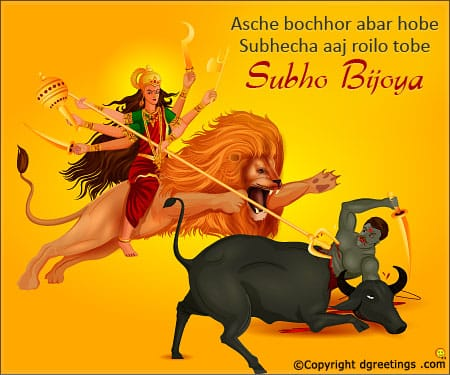

Dashami is the last day of Durga Puja, when a tearful ferewell is offered to the deity. In Bengal, Goddess Durga is worshipped in the form of Aparajita on the day. It is followed by Maha Arati which marks the end of the important rituals and prayers during Durga Puja.
After the shital bhog of Panta Vat,kochur Sak and Ilis Mach vaja, the Purohit performs the Bisarjan Puja. In this ritual the Devi, who had been invoked in the Navapatrika and divinized idol, is entreated to return to her celestial abode. This is followed by Prasasthi Vandana. In darpan, a mirror is placed in the front of the deity and devotees.lool into the mirror to see the deity's feet.
Devi Boron is the final sending off of Uma by the married womenfolk of the locality. The ladies perform Arati of Goddess Durga and smear Her with vermillion(sindoor) and offer sweets, beetle-leaf. Then all the married woman paint each other with vermillion and share sweets.
After Boron, the Devi is brought out of the house, and readied for departure to the Ganga for immerson. This process is called Visarjan, where in a grand send of is arranged by the devotees. Before the immerson of idol the last arati for this year is performed on the bank of the river. She is immersed with great care by some persons who take her into the water.
A unique ritual on the day is the vijaya ceremony. People embrace each other and forgive and forget pastoffences and promise a new begining and the juniors tiuch the feet of the seniors seeking for blessing.